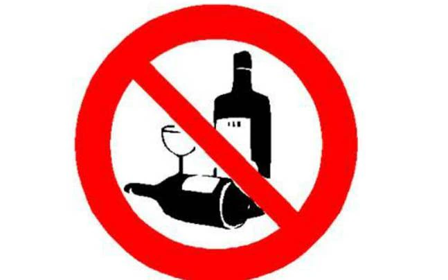

Alcohol, a substance that has been used in various cultures for centuries, both in social settings and religious ceremonies, carries with it a significant burden on public health, an aspect that cannot be overlooked. Despite its widespread acceptance and integration into numerous social rituals, the adverse effects of alcohol on health are profound and multifaceted, affecting individuals physically, mentally, and socially. Initially, the consumption of alcohol can lead to immediate physical effects such as impaired judgment, coordination, and reaction times, making activities such as driving perilous and increasing the risk of accidents and injuries. However, the impact of alcohol extends far beyond these immediate risks. Prolonged and excessive alcohol consumption is a leading cause of liver diseases, such as fatty liver, alcoholic hepatitis, fibrosis, and cirrhosis. The liver, being the primary site of alcohol metabolism, bears the brunt of alcohol abuse, leading to conditions that can be life-threatening. Furthermore, alcohol is a major risk factor for the development of various forms of cancer, notably including cancers of the mouth, esophagus, throat, liver, and breast. The carcinogenic effects of alcohol are compounded by its ability to alter hormone levels and damage body tissues.
On the mental health front, alcohol misuse is strongly associated with psychiatric disorders such as depression and anxiety. It can exacerbate symptoms of existing mental health issues and can lead to the development of new psychiatric conditions. Alcohol's impact on the brain includes interference with neurotransmitters, leading to changes in mood, behavior, and cognitive functions. Chronic alcohol consumption can result in significant brain damage, manifesting as memory loss, impaired cognitive functions, and diminished intellectual capacity. Additionally, alcohol dependence or addiction is a severe consequence of regular, excessive consumption, highlighting the substance's potential to hijack the reward pathways of the brain, making cessation challenging and often requiring professional intervention.
Socially, the ramifications of alcohol misuse are equally devastating. Relationships can suffer due to behaviors exhibited while under the influence of alcohol or as a result of the ongoing neglect of responsibilities. Alcohol is often a contributing factor in cases of domestic violence and child abuse, tearing families apart and perpetuating cycles of violence and neglect. Financial difficulties are another consequence, as individuals may spend beyond their means to sustain their alcohol consumption, or they may lose their job due to alcohol-related performance issues. Furthermore, societal costs associated with alcohol misuse are astronomical, encompassing healthcare expenses, lost productivity, and law enforcement resources.

while alcohol may hold a place in social and cultural traditions, its potential to inflict harm on individual and public health is immense. The spectrum of alcohol-related harm spans from immediate physical risks to long-term damage to the liver, increased risk of cancers, mental health disorders, and significant social and economic costs. Recognizing and addressing the myriad health risks associated with alcohol is crucial in mitigating its impact on society and individuals alike. Efforts to educate the public about the dangers of excessive alcohol consumption, alongside policies aimed at reducing alcohol availability and consumption, are vital steps toward safeguarding health and wellbeing.
The discourse on the injurious impacts of alcohol consumption extends into the realm of cardiovascular health, a facet of utmost importance given the prevalence of heart disease globally. While moderate alcohol consumption has been suggested in some studies to offer protective benefits against certain cardiovascular diseases, the narrative shifts dramatically when consumption patterns become excessive. Chronic heavy drinking is a well-established risk factor for a spectrum of cardiovascular issues, including hypertension (high blood pressure), cardiomyopathy (a disease of the heart muscle that makes it harder for the heart to pump blood to the rest of the body), arrhythmias (irregular heartbeats), and even stroke. These conditions are not only life-altering but also life-threatening, underscoring the gravity of alcohol’s potential to inflict harm on the cardiovascular system. The mechanism behind alcohol’s effect on the heart and blood vessels is complex, involving alterations in blood lipids, increased oxidative stress, and direct toxicity to the heart muscle cells, illustrating the significant risk prolonged heavy drinking poses to heart health.
Moreover, the digestive system does not escape unscathed from the adverse effects of alcohol. Alcohol can irritate the stomach lining, leading to gastritis and ulcers. It also disrupts the balance of the gut microbiome, which can have far-reaching effects on overall health, including nutrient absorption and immune function. The pancreas is another organ that is vulnerable to the effects of alcohol, with alcohol-induced pancreatitis being a painful and potentially fatal condition that arises from inflammation of the pancreas, leading to a breakdown of its function. This can result in severe abdominal pain and complications such as diabetes and malnutrition, reflecting the extensive nature of alcohol-related damage to the digestive system.
The impact of alcohol on reproductive health further exemplifies its wide-ranging detrimental effects. In men, chronic alcohol misuse can lead to lowered testosterone levels, erectile dysfunction, and reduced fertility. Women face risks such as menstrual irregularities, decreased fertility, and complications during pregnancy, including an increased risk of miscarriage, premature delivery, and fetal alcohol syndrome—a condition in children that results in lifelong intellectual and developmental disabilities. These reproductive health issues highlight the deeply personal and generational impact of alcohol abuse, affecting not just the individual but potentially the health and well-being of offspring.
Finally, the societal and economic burdens of alcohol consumption cannot be overstated. The healthcare systems bear the financial weight of treating alcohol-related conditions, which diverts resources from other areas of healthcare that also require attention. Productivity losses due to alcohol-related absenteeism and decreased work performance further drain the economy, while law enforcement and the criminal justice system face challenges in managing alcohol-fueled crime and violence. The social fabric of communities is eroded by the loss of productive members to alcohol-related illness and death, and families are often destroyed by the financial and emotional strains of dealing with a loved one’s alcohol addiction.
In light of these comprehensive insights into the injurious effects of alcohol on health, it is clear that the consequences of alcohol consumption extend far beyond the individual, impacting families, communities, and society at large. The multifaceted nature of alcohol-related harm necessitates a multifaceted approach to prevention and treatment, encompassing public health policies, education, and individual support systems. It is only through concerted efforts across these domains that the tide of alcohol-related harm can be turned, fostering a healthier, more vibrant society free from the shackles of alcohol dependency and its myriad negative health outcomes.